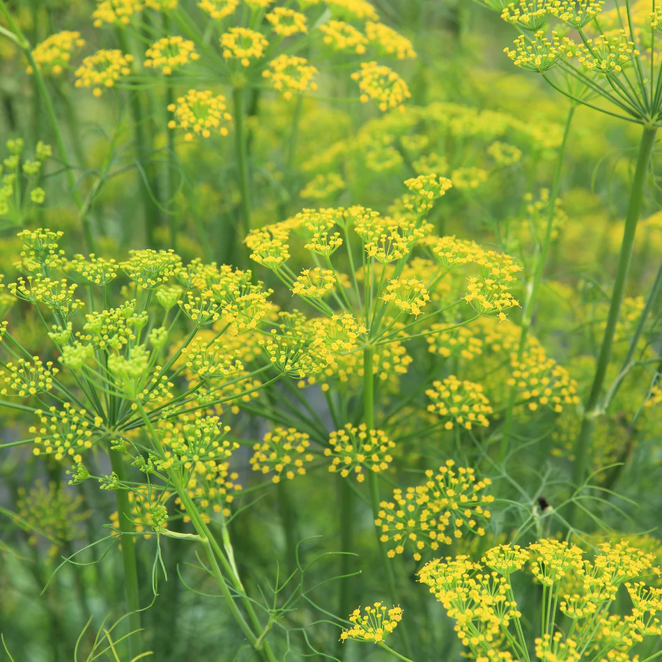

Korean Culture
columbine (anxiety)
fennel (flattery)
hyssop (cleanliness)
Rosa Parks and Odyseuss
Peanut butter with crackers and milk: It is not acutally a meal but it is a quick and effective way to get the job done.
Spaghetti: It is messy, but it is so good.
I am alone or feel pressure. I also like my space to be neat.
I love talking about and analysing all types of movies. I think if my family did not tell me to shut up, I would never stop talking about underlying meanings